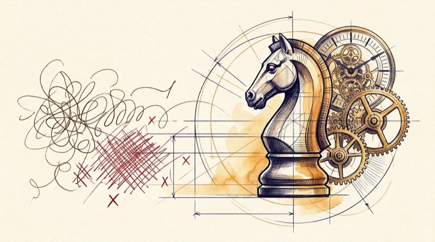
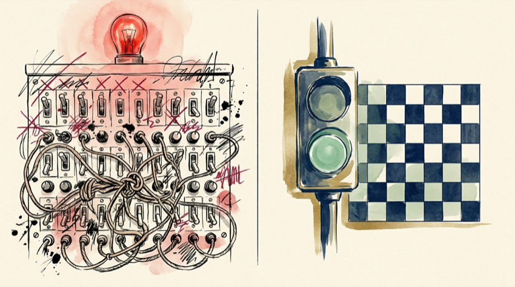
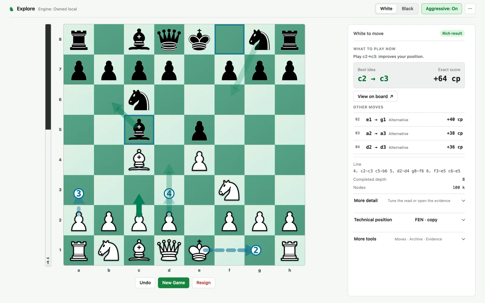
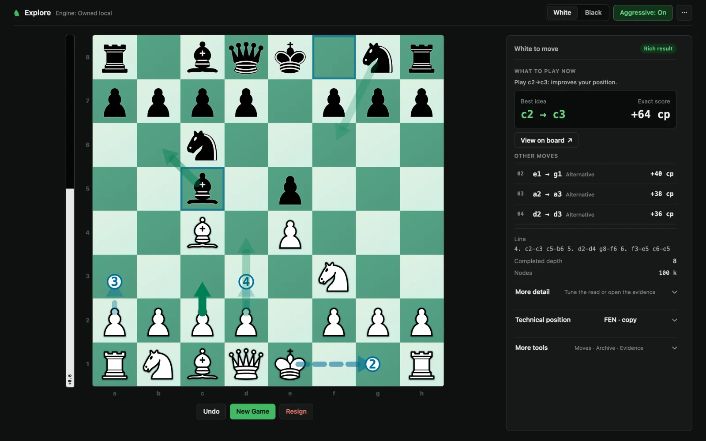

Las Cuatro Reconciliaciones: Lo que queda en las juntas después de reconstruir un motor de ajedrez en 36 horas
Entre el 18 y el 20 de noviembre de 2026 borramos 157,518 líneas, escribimos un motor PVS desde cero (~3039 Elo CCRL Blitz) y migramos Explore a WebAssembly a 1.5 millones de nodos por segundo. Pero cuando una locomotora nueva entra a una estación vieja, las vías chirrían en cuatro lugares exactos: costos hundidos, errores tragados, cimientos de medición desfasados y máquinas de estado implícitas.
Por Angel Miranda (angelmiranda.dev)Ilustraciones: Motor Procedural Multi-Cerda en Canvas 2D (0 imágenes externas, 0 CDNs)Auditoría: Commits 29c09ff → 4bcee2a + Reconciliación
I. Costos Hundidos
4,480 vs 3,192 L
La búsqueda y eval viejas (lib.rs) aún superan en líneas al motor nuevo completo + 24 scripts huérfanos.
II. Errores Tragados
5 → 1 "search-failed"
Cinco causas distintas —incluida la cancelación normal del usuario en :67— encendían el mismo foco rojo.
III. Foundations (Velocidad)
2.5M vs 239.9k nps
El motor real corre 10× más rápido (~3039 Elo), pero just bench seguía midiendo el ejemplo viejo a prof. 3.
IV. Estado Implícito
67 mutaciones state=
27 campos, 4 contadores manuales y un bug real en resignGame(:638) que olvidaba forcingRequestVersion.
Reescribir el corazón algorítmico de un sistema es la parte embriagadora de la ingeniería: ves subir el marcador SPRT partida tras partida, ves caer el tiempo de búsqueda en el navegador a 200 milisegundos y celebras que el árbol de juego por fin razona con precisión táctica. Sin embargo, ningún sistema vive únicamente en su algoritmo central. Vive en los cables que cruzan el puente WebAssembly, en los workers que se cancelan cuando el jugador mueve rápido, en el comando just bench que protege contra regresiones y en los archivos viejos que nadie se atrevió a desconectar.
Este documento es una radiografía honesta —tanto para un niño curioso (Modo ELI5) como para un ingeniero de sistemas (Modo Técnico)— de las cuatro reconciliaciones necesarias para que la arquitectura alrededor del motor esté a la altura del motor mismo. Cada sección abre con una lámina dibujada en vivo mediante nuestro motor procedural de tinta sumi-e, pluma fuente y acuarela sobre papel algodón en Canvas 2D. Haz clic en «Re-dibujar pinceladas» en cualquiera de las cuatro obras para observar cómo se construye cada trazo.
Fig. 1. A la izquierda, el pabellón mecánico del nuevo motor PVS (3,192 líneas). A la derecha, el ático polvoriento que sigue compilándose en el mismo binario (4,480 líneas + 24 scripts huérfanos).Cerdas múltiples · Curvas de presión Bézier · Acuarela wet-on-wet
✦ Explicación ELI5 · La metáfora
Construiste una casa moderna, pero sigues pagando la luz del ático viejo
Imagina que tenías una casa vieja con tuberías ruidosas. En un fin de semana construyes al lado una casa nueva, luminosa y súper eficiente. Ya duermes y cocinas en la casa nueva (Explore y las partidas contra la máquina ya usan el motor nuevo).
Pero como todavía guardas tres cajas de herramientas en el ático viejo (la revisión del coach, el mapa de reacción y la lente de jugadas forzadas), no has podido demoler la casa antigua. Peor aún: en el garaje tienes 24 cajas cerradas con cinta adhesiva (scripts de prueba de diseños pasados) que nadie abre, y en el panel de velocidad de tu coche los botones de «Velocidad 5» y «Velocidad 6» están conectados exactamente al mismo cable (960,000 pasos).
⚙ Diagnóstico Técnico · Evidencia en código
Coexistencia de dos motores completos y duplicación de presupuestos
Tras el commit 29c09ff, la vista principal Explore migró a crates/search/src/engine.rs + explore.rs con evaluación tapered ajustada por Texel. Sin embargo, el árbol de compilación mantiene dos stacks completos de búsqueda y evaluación:
El stack nuevo suma 3,192 líneas (engine.rs 1,197 + explore.rs 309 + skill.rs 281 + tapered.rs 1,405). El stack legado suma 4,480 líneas (crates/search/src/lib.rs 3,378 + crates/eval/src/lib.rs 1,102) porque sigue alimentando review_game en crates/coach, reaction_lines* y forcing_moves*. Además, detectamos 24 scripts huérfanos en scripts/, un shim WASM redundante y niveles 5 y 6 idénticos en el ejecutor web.
En los mapas strengthDepthCaps y strengthNodeBudgets, elegir nivel 5 o nivel 6 producía exactamente el mismo límite de profundidad (16) y el mismo presupuesto de nodos (960,000).
// play-wasm-executor.ts:90-97
const strengthNodeBudgets = new Map([
[1, 60_000], [2, 120_000],
[3, 240_000], [4, 480_000],
[5, 960_000], [6, 960_000] // ← Duplicado exacto con nivel 5 [5, 640_000], // ← Reconciliado: progresión real 1..6 [6, 1_200_000]
]);
De los 32 scripts en scripts/, solo 8 están conectados a justfile o package.json. Los otros 24 (proof-p1..p6, proof-m1..m6, etc.) buscan selectores DOM que ya no existen.
# Activos en justfile / package.json (8):
audit-policy.mjs, audit-runtime-network.mjs,
build-web.mjs, preview-web.mjs, smoke-web.mjs...
# Huérfanos sin invocador (24):proof-p1-Layout.mjs .. proof-m10-release-signoff.mjs
Capítulo II · Observabilidad & Contratos Honestos
Errores Tragados — «El tablero con un solo foco rojo»
Lámina II · Tinta China & Halo CarmesíRender completo · 100% Canvas 2D
Fig. 2. Cinco cables de naturaleza opuesta —desde un pánico en WASM hasta el botón legítimo de cancelar búsqueda cuando el usuario mueve otra pieza— convergen en el mismo bulbo rojo: "search-failed".Lavado carmesí multicapa · Sombreado de cables Bézier · Salpicadura de pluma
✦ Explicación ELI5 · La metáfora
Un auto donde pisar el freno enciende la alerta de «Motor Fundido»
Imagina el tablero de instrumentos de un coche que solo tiene un foco rojo gigante que dice FALLO DEL MOTOR. Si se rompe la correa, se prende el foco. Si la gasolina está sucia, se prende el foco. ¡Pero si tú simplemente cambias de estación de radio o pisas el freno porque cambiaste de opinión, también se prende el mismo foco de FALLO DEL MOTOR!
Y del otro lado, en la fábrica de piezas (Rust), cuando el inspector no tenía a mano la regla para medir qué tan buena era una jugada, en vez de anotar «Sin referencia», le pegaba una estrellita dorada de «¡Mejor Jugada (Best)!» para no dejar la casilla vacía.
⚙ Diagnóstico Técnico · Evidencia en código
Colapso de discriminantes en TypeScript y fallbacks mentirosos en Rust
En la frontera entre crates/wasm-bridge y apps/web/src/ encontramos tres patrones clásicos de absorción de errores:
1. Cancelación disfrazada de fallo: En play-worker-engine.ts:62-70, el método cancel() resolvía todas las promesas pendientes en vuelo con { ok: false, error: "search-failed" }. Cada vez que el usuario hacía una jugada rápida o Undo y recreaba el worker de análisis (:82), el canal reportaba un fallo de búsqueda idéntico a un panic de WebAssembly. 2. Halago por omisión: En wasm-bridge/src/lib.rs:1268-1270, si best_exact_score era None, .unwrap_or(MoveQuality::Best) graduaba cualquier jugada como "best". 3. Tablero zombi en new_game(): En wasm-bridge/src/lib.rs:499-507, un unwrap_or_else devolvía una partida con estado Ongoing pero legal_moves: Vec::new().
crates/wasm-bridge/src/lib.rs:1267-12714/4 "Best" en Aggressive
.unwrap_or(MoveQuality::Best) y referencia invertida
En side_explore_dto se tomaba candidates.first() como referencia y .unwrap_or(MoveQuality::Best) como fallback. En modo Aggressive (donde tras 1.e4 e5 se reordena Bc4 (+23) delante de Nc3 (+42)), comparar +42 contra +23 daba pérdida 0.0 y coronaba las 4 jugadas como Best.
// crates/wasm-bridge/src/lib.rs:1251-1271let best_exact_score = report.candidates.first().map(|c| c.exact_score);// ... .unwrap_or(MoveQuality::Best)let best_exact_score = report.candidates.iter().map(|c| c.exact_score).max()?;// Ahora Bc4 (+23) y d4 (+40) son Excellent; solo +42 es Best
crates/wasm-bridge/src/lib.rs:499-507Estado Zombi
Partida «En curso» con 0 jugadas legales
Position::startpos() es un invariante estático. Sin embargo, new_game() atrapaba errores fabricando un DTO corrupto donde es turno de Blancas pero no existe ningún movimiento legal.
// crates/wasm-bridge/src/lib.rs:499-507
pub fn new_game() -> EngineStateDto {
state_dto(&Position::startpos()).unwrap_or_else(|_| EngineStateDto { status: GameStatusDto::Ongoing, legal_moves: Vec::new(), // ← Estado imposible en ajedrez ... }) state_dto(&Position::startpos()) .expect("startpos is a valid chess position invariant")
}
Capítulo III · Verdad Empírica & Metrología
Foundations Rotas — «El velocímetro en la bicicleta vieja»
Lámina III · Cuaderno Técnico en Índigo Prusia & OcreRender completo · 100% Canvas 2D
Fig. 3. El caballo mecánico del motor nuevo salta sobre el tablero a 2,500,000 nodos/s (~3039 Elo), mientras el velocímetro oficial del repositorio (just bench) sigue atornillado con un cable a la rueda de la bicicleta vieja (239,982 nps a profundidad 3).Líneas de construcción geométrica · Pluma índigo · Acuarela ocre
✦ Explicación ELI5 · La metáfora
Tienes un caballo pura sangre, pero el cronómetro oficial mide tu triciclo
Imagina que entrenas un caballo de carreras capaz de galopar a velocidad récord. Cada vez que alguien te pregunta «¿qué tan rápido corre el proyecto?», tomas el cronómetro oficial del club (just bench)... ¡pero el cable del cronómetro sigue amarrado a la rueda de la bicicleta oxidada que usabas el año pasado!
El cronómetro marca orgulloso: «¡239 mil pasos por segundo, todo en orden!». Si mañana la bicicleta vieja se engrasa, el cronómetro aplaude; y si el caballo de carreras se lastima una pata, el cronómetro ni siquiera se entera porque no lo está mirando.
⚙ Diagnóstico Técnico · Evidencia en código
Desacoplamiento entre el benchmark de regresión (m8_bench) y el motor de producción
La regla número uno de nuestro mapa de ingeniería (AGENTS.md) exige: «Evidencia en vez de afirmaciones: cuando digas más rápido o más fuerte, muéstrame el número y el comando».
Al auditar benches/m8-bench.mjs, benches/baseline.json y crates/cli/src/main.rs (subcomando bench y analyze-fen), comprobamos que just bench ejecutaba cargo run --release --quiet -p chess-search --example m8_bench a profundidad 3 sobre 5 posiciones, visitando 53,996 nodos en 225 ms (239,982 nps) con la búsqueda vieja de crates/search/src/lib.rs. Mientras tanto, el motor real en crates/search/src/engine.rs opera entre 2.0 y 3.0 millones de nodos/s en nativo (y 1.0–1.5M nps en WASM). Reconciliar los cimientos significa conectar el tacómetro al motor real.
De profundidad 3 en 225 ms a profundidad 9 en 41 ms
Al migrar m8_bench de chess_search::search a Engine::think (TT 16 MB), el benchmark oficial pasa de 239,982 nps a 4,734,365 nps (llegando 6 plies más profundo en menos de la mitad del tiempo).
// benches/baseline.json (Antes vs Después medido)"depth": 3, "total_nodes": 53996, "elapsed_ms": 225, "nps": 239982"depth": 9, "total_nodes": 194109, "elapsed_ms": 41, "nps": 4734365
crates/cli/src/main.rs (bench & analyze-fen)235× más rápido a prof. 6
chess-cli bench y analyze-fen sobre Kiwipete
En chess-cli bench --depth 6, el tiempo cae de 1,886 ms (1,022,976 nodos) a 8 ms (24,401 nodos, 3.05M nps). En Kiwipete a prof. 6, analyze-fen pasa de 1,005,387 nodos (1,817 ms) a 7,065 nodos (~3 ms, 142× menos nodos).
Máquinas de Estado Implícitas — «El cruce sin semáforo»
Lámina IV · Díptico en Acuarela Carmesí / ViridiánRender completo · 100% Canvas 2D
Fig. 4. A la izquierda, la maraña implícita de play-ui.ts: 27 interruptores, 67 flechas de mutación directa y 4 contadores manuales donde forcingRequestVersion quedó olvidado en resignGame. A la derecha, el grafo explícito sincronizado por RequestTracker.Composición partida · Grafo dirigido en tinta · Lavado viridián
✦ Explicación ELI5 · La metáfora
Cuatro boletos de turno en la cocina y un repartidor fantasma
Imagina una cocina muy ocupada donde hay cuatro libretas de números de pedido distintas (una para el plato fuerte, otra para la salsa, otra para las bebidas y otra para el postre). Cuando un cliente dice «¡Ya me voy, cancelen mi mesa!» (Resign / Rendirse), el mesero tiene que acordarse de tachar las cuatro libretas a mano.
¿Qué pasó en la vida real? Al escribir la regla de «Rendirse», el mesero tachó la libreta 1, la libreta 2 y la libreta 4... ¡pero se le olvidó tachar la libreta 3! Así que medio segundo después de que la partida ya había terminado por rendición, llegaba corriendo el cocinero de la libreta 3 y servía sugerencias de jugadas sobre una mesa que ya estaba cerrada.
⚙ Diagnóstico Técnico · Evidencia en código
27 campos, 67 reasignaciones state =, variable sombra y el bug de resignGame
apps/web/src/play-ui.ts creció hasta 6,014 líneas gobernadas por un objeto PlayUiState de 27 propiedades (:345-372) que se reasigna mediante state = { ...state, ... } en 67 sitios distintos sin transiciones centralizadas.
Para descartar respuestas asíncronas obsoletas de los workers, el archivo mantenía 4 contadores mutables sueltos en el closure (:394-397): gameVersion, lensRequestVersion, forcingRequestVersion y sideExploreRequestVersion, además de una variable local let playMode (:406) que duplicaba state.playMode (:357). Cuando una invariante depende de que el humano recuerde incrementar 4 variables juntas en cada salida, tarde o temprano ocurre un bug: en resignGame (:638-640) faltaba incrementar forcingRequestVersion y faltaba limpiar forcing: emptyForcing().
apps/web/src/play-ui.ts:633-653Bug real verificado
Fuga de forcingRequestVersion al rendirse
En resignGame se invalidaban 3 de los 4 contadores, dejando viva cualquier petición en vuelo de la lente de jugadas forzadas.
apps/web/src/play-state-machine.tsImposible por diseño
Reconciliación: createRequestTracker() y transiciones puras
Al encapsular las generaciones en un tracker atómico con invalidateAll() e invalidatePosition() y eliminar la variable sombra let playMode, olvidar un contador deja de ser posible.
// apps/web/src/play-state-machine.ts
export function createRequestTracker(): RequestTracker {
// invalidateAll() avanza TODAS las generaciones en una sola operación
// y transitionResignGame() resetea los 4 sub-estados de análisis.
}
Laboratorio Interactivo: Simula la condición de carrera en resignGame(:638)
Compara qué ocurre cuando un worker de forcingMoves tarda 180ms y el jugador se rinde a mitad del cálculo.
gameVersion1
lensRequestVersion4
forcingRequestVersion2 (¡Olvidado en :638!)
sideExploreVersion7
Pulsa cualquiera de los dos botones arriba para disparar una petición en vuelo de forcingMoves (req #2) seguida de resignGame("user").
Capítulo V · Archivo Visual & Matriz Forense
Galería de Evidencia Real y Láminas Editoriales
Todas las capturas y gráficos siguientes provienen directamente del árbol local (docs/ y docs/media/). Las dos láminas de cabecera (./media/reconciliaciones/hero.png y ./media/reconciliaciones/diptych.png) cuentan con render procedural automático de respaldo en caso de abrir este archivo antes de sincronizar la carpeta de medios.

Lámina procedural activa · Ruta lista para ./media/reconciliaciones/hero.png
Lámina Editorial I — El Puente de Reconciliación
Ilustración de portada para angelmiranda.dev: la transición entre el árbol legado y el motor PVS de ~3039 Elo.
./media/reconciliaciones/hero.png

Lámina procedural activa · Ruta lista para ./media/reconciliaciones/diptych.png
Lámina Editorial II — Díptico de Estado y Observabilidad
Contraste visual entre errores tragados / contadores desincronizados y contratos explícitos verificables.
./media/reconciliaciones/diptych.png

Explore sobre el Motor Real (Tema Claro)
Con 300k nodos de presupuesto en WASM (1.0–1.5M nps), Explore alcanza profundidad 9–10 en ~200 ms y recomienda 3.d4 (+52) tras 1.e4 e5.
./media/explore-light.webp

Explore sobre el Motor Real (Tema Oscuro)
Panel lateral fijo con barra de evaluación, oración explicativa generada desde hechos tácticos SEE en Rust y líneas numeradas.